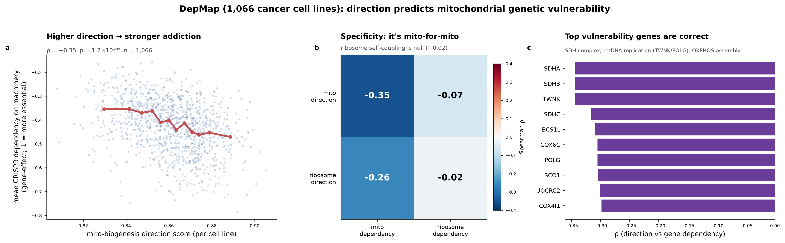

Built with Claude · Life Sciences · Research track
Two cells can hold the same number of mitochondria for opposite reasons — one is building them, the other has stopped clearing them. Count how many are there and they look identical. Read the direction instead, and you can predict which cancers are addicted to their mitochondria and which drugs will hit them.
Identical counts, opposite states. The count is what a conventional signature reports; the direction is what the cell is actually doing — and in 1,066 cancer cell lines it is Cell A, the one still building, that dies when you switch its mitochondrial machinery off.
A standard organelle signature answers “how much is there.” But build-up and tear-down move many of the same genes, so a single-axis score cannot tell a cell that is proliferating mitochondria from one whose disposal machinery has stalled — and the genes that would separate them, the selective-autophagy receptors, are usually not in the signature at all.
So we score the two opposing programs separately and subtract them:
One signed number per sample, from an ordinary transcriptome, proteome, or phosphoproteome. Positive means net building; negative means net clearing. It is a set-point — which program dominates right now — validated against timecourses where the true direction is known. It is not an organelle headcount and not a measured rate.

| Claim | Result | Data |
|---|---|---|
| Direction → genetic vulnerability | ρ = −0.35, n = 1,066 | DepMap CRISPR |
| ↳ survives dependency-burden control | partial r = −0.32 | |
| Direction → drug response | mito-drug class MWU p = 0.017 | DepMap PRISM |
| Cross-modal agreement in human tumour | RNA g = −1.52 · protein g = −3.14 | CPTAC ccRCC |
| Graded by organelle, as biology predicts | mito −0.35 · ER −0.15 · lysosome null | DepMap |
| Survival in kidney cancer — reported null | Cox p = 0.21 at 8× the power | TCGA-KIRC, 508 tumours |
Effect sizes are modest, as expected for a single-pathway expression score predicting a functional phenotype across heterogeneous cell lines. The value is a real, specific, lineage-robust, correctly-signed signal — not a high-accuracy point predictor.
git clone https://github.com/different-change/organelle-direction
cd organelle-direction/scorer
python run_dynamics.py --self-check
python run_dynamics.py --expression your_matrix.csv \
--organelle mitochondrion --organism human
Sixteen curated modules ship with it — seven organelles across yeast, Arabidopsis, rice and human, each gene resolver-backed with provenance. The engine is organelle-agnostic: drop in a new pair of gene-set CSVs and it scores that.
The selective-clearance arm is populated wherever a genuine selective-autophagy receptor exists and empty where none is known — including every plant organelle. That pattern is biology, not a defect, and the tool reports it rather than hiding it.